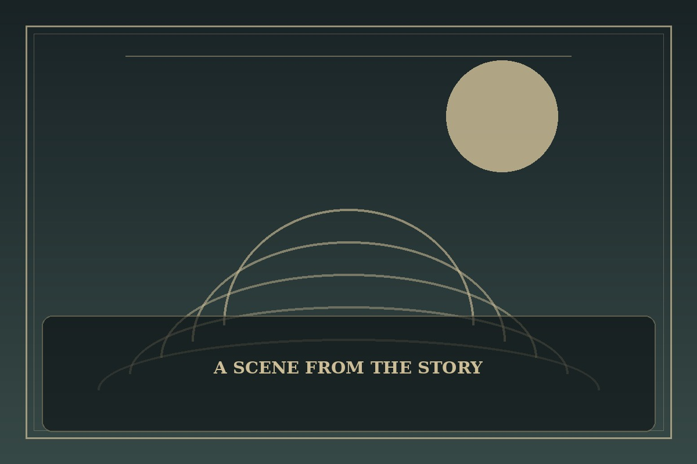

The Legend of the Northern Blade
Synopsis
A quiet survivor inherits the burden of a fallen martial tradition. As old enemies and buried histories resurface, he must decide what it means to restore a legacy without repeating its cruelties.
Chapter 1: Snow on the Empty Courtyard
Snow covered the courtyard where the old master had taught his students. Jun stood alone beneath the eaves, practicing a form that no longer had anyone left to correct him.
A traveler arrived carrying a broken emblem from the order that had betrayed his family. He offered information in exchange for the hidden manual, certain that the young swordsman would trade anything for revenge. Jun listened until the traveler’s story contradicted itself.
Rather than draw his blade, Jun asked him to help repair the ruined gate. The request unsettled the visitor more than a threat would have. Jun still intended to uncover the truth, but he would rebuild the school first—so that its future would be more than a monument to anger.

This fan-made sample is an original piece created for a student website project; it is not an official chapter of The Legend of the Northern Blade.